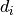
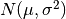

softmaxExercise¶
Softmax Regression Using Scipy.
@author: Bhishan Poudel
@date: Oct 16, 2017
@email: bhishanpdl@gmail.com
-
softmaxExercise.randint(low, high=None, size=None, dtype='l')¶ Return random integers from low (inclusive) to high (exclusive).
Return random integers from the “discrete uniform” distribution of the specified dtype in the “half-open” interval [low, high). If high is None (the default), then results are from [0, low).
Parameters: - low (int) – Lowest (signed) integer to be drawn from the distribution (unless
high=None, in which case this parameter is one above the highest such integer). - high (int, optional) – If provided, one above the largest (signed) integer to be drawn
from the distribution (see above for behavior if
high=None). - size (int or tuple of ints, optional) – Output shape. If the given shape is, e.g.,
(m, n, k), thenm * n * ksamples are drawn. Default is None, in which case a single value is returned. - dtype (dtype, optional) –
Desired dtype of the result. All dtypes are determined by their name, i.e., ‘int64’, ‘int’, etc, so byteorder is not available and a specific precision may have different C types depending on the platform. The default value is ‘np.int’.
New in version 1.11.0.
Returns: out – size-shaped array of random integers from the appropriate distribution, or a single such random int if size not provided.
Return type: int or ndarray of ints
See also
random.random_integers()- similar to randint, only for the closed interval [low, high], and 1 is the lowest value if high is omitted. In particular, this other one is the one to use to generate uniformly distributed discrete non-integers.
Examples
>>> np.random.randint(2, size=10) array([1, 0, 0, 0, 1, 1, 0, 0, 1, 0]) >>> np.random.randint(1, size=10) array([0, 0, 0, 0, 0, 0, 0, 0, 0, 0])
Generate a 2 x 4 array of ints between 0 and 4, inclusive:
>>> np.random.randint(5, size=(2, 4)) array([[4, 0, 2, 1], [3, 2, 2, 0]])
- low (int) – Lowest (signed) integer to be drawn from the distribution (unless
-
softmaxExercise.randn(d0, d1, ..., dn)¶ Return a sample (or samples) from the “standard normal” distribution.
If positive, int_like or int-convertible arguments are provided, randn generates an array of shape
(d0, d1, ..., dn), filled with random floats sampled from a univariate “normal” (Gaussian) distribution of mean 0 and variance 1 (if any of the  are floats, they are first converted to integers by truncation). A single float randomly sampled from the distribution is returned if no argument is provided.This is a convenience function. If you want an interface that takes a tuple as the first argument, use numpy.random.standard_normal instead.
Parameters: d1, .., dn (d0,) – The dimensions of the returned array, should be all positive. If no argument is given a single Python float is returned. Returns: Z – A (d0, d1, ..., dn)-shaped array of floating-point samples from the standard normal distribution, or a single such float if no parameters were supplied.Return type: ndarray or float See also
random.standard_normal()- Similar, but takes a tuple as its argument.
Notes
For random samples from , use:
sigma * np.random.randn(...) + muExamples
>>> np.random.randn() 2.1923875335537315 #random
Two-by-four array of samples from N(3, 6.25):
>>> 2.5 * np.random.randn(2, 4) + 3 array([[-4.49401501, 4.00950034, -1.81814867, 7.29718677], #random [ 0.39924804, 4.68456316, 4.99394529, 4.84057254]]) #random